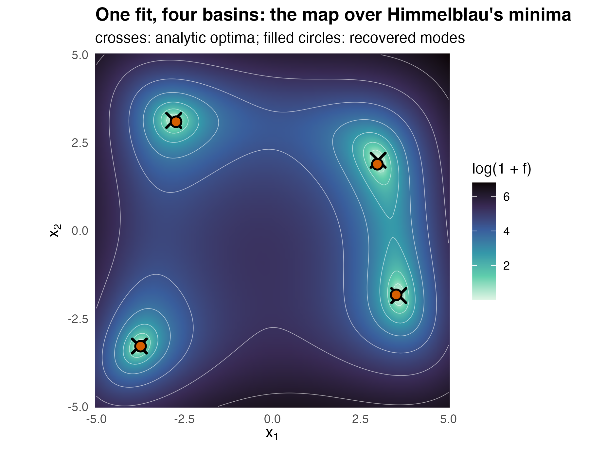

Mapping the optima of an objective
Source:vignettes/articles/extended/calibration.Rmd
calibration.Rmd
has_ggplot2 <- requireNamespace("ggplot2", quietly = TRUE)The problem
A calibration problem has landed on the desk of someone who has run optimisers before and does not trust them here. The loss surface has more than one basin, and every run from a different starting point lands somewhere else. The question is: my objective has more than one minimum, so how do I get all of them, and some sense of how the basins compare, instead of whichever one a local optimiser happened to fall into?
The whole set of optima can be treated as a density, and fitting a density is what the package does.
Package capabilities
An objective to be minimised over a box defines an unnormalised density, the Gibbs measure , whose mass concentrates on the low regions of as the temperature falls. That density can be evaluated point-wise but not directly sampled, which is exactly regime (iii) of van der Hoek and Elliott (2024).
from_objective() fits a Gaussian-mixture proxy to
by cooling a short temperature ladder through the same
importance-sampled KLD-EM that fit_kld_em() runs,
warm-starting each step from the previous fit. Its lower
and upper arguments are the search region: they set where
the optima are sought, and they scale the temperature ladder, the
uniform exploration of the proposal, and the initialisation. During
fitting the objective is evaluated only inside the box. Points outside
it, and points where the objective is not finite, receive a finite
penalty. Setting minimise = FALSE concentrates the map on
the maxima of
instead of the minima.
gmm_modes() reads the distinct optima off the fitted map
by the fixed-point mode search of Carreira-Perpiñán (2000), started from
every component mean. It returns the mode locations, the mixture density
at each one, and how many distinct modes survived deduplication. The
density at a mode is the height of the map at that point: it measures
how strongly the Gibbs measure concentrates there. It is not the
objective value, and it is not the mass of the basin.
ess_summary() reports the importance-sampling
diagnostics that travel with the fit, so the map can be judged before it
is trusted.
The point of the construction is not a single best point but the
whole picture. A multimodal
gives a multimodal Gibbs measure, so the fitted mixture spreads its
components across the basins and recovers the optima together.
The result is an ordinary gmm, so the closed-form operator
calculus – marginalisation, conditioning, divergence – applies to the
map of solutions like any other fitted mixture.
Addressing the problem
A bimodal objective in one dimension
The objective has two minima, at and . Fit the map and resolve it.
set.seed(20260619)
f <- function(v) (v[1]^2 - 4)^2
fit <- from_objective(f, lower = -5, upper = 5, N = 6L,
is_size = 3000L, n_steps = 5L, seed = 1L)
modes <- gmm_modes(fit)
sort(round(modes$modes[, 1], 3))
#> [1] -2.034 2.031The fitted object is a gmm_fit, so the
importance-sampling diagnostics are available alongside the map.
ess_1d <- ess_summary(fit)
c(ess = round(ess_1d$ess, 1), is_size = ess_1d$is_size,
ess_relative = round(ess_1d$ess_relative, 3))
#> ess is_size ess_relative
#> 1565.100 3000.000 0.522Four minima at once: Himmelblau
Himmelblau’s function has four equal minima. A single-point optimiser
would return one of them and miss the rest.
from_objective() returns all four in one fit, provided the
number of components N is comfortably larger than the
number of optima so that a component can settle on each basin.
himmelblau <- function(v) {
x <- v[1]
y <- v[2]
(x * x + y - 11)^2 + (x + y * y - 7)^2
}
fit2 <- from_objective(himmelblau, lower = c(-5, -5), upper = c(5, 5),
N = 10L, is_size = 4000L, n_steps = 6L, seed = 1L)
found <- gmm_modes(fit2)
found$n
#> [1] 4Himmelblau’s optima are known in closed form, so the recovered map can be checked against them rather than against itself. Each recovered mode is matched to its nearest analytic optimum, and the distance between the two is the error the reader should judge the fit on.
truth <- rbind(c(3, 2), c(-2.805118, 3.131312),
c(-3.779310, -3.283186), c(3.584428, -1.848126))
pair_dist <- as.matrix(dist(rbind(found$modes, truth)))
n_found <- nrow(found$modes)
pair_dist <- pair_dist[seq_len(n_found), n_found + seq_len(nrow(truth))]
nearest <- apply(pair_dist, 1L, which.min)
gap <- apply(pair_dist, 1L, min)
all_distinct <- length(unique(nearest)) == nrow(truth)
worst_gap <- max(gap)
data.frame(modes_found = found$n, one_per_optimum = all_distinct,
worst_gap = round(worst_gap, 3))
#> modes_found one_per_optimum worst_gap
#> 1 4 TRUE 0.117| Recovered | Recovered | Analytic | Analytic | Distance | Mixture density |
|---|---|---|---|---|---|
| 2.977 | 1.886 | 3.000 | 2.000 | 0.117 | 0.255 |
| -2.738 | 3.093 | -2.805 | 3.131 | 0.077 | 0.254 |
| 3.512 | -1.829 | 3.584 | -1.848 | 0.075 | 0.253 |
| -3.747 | -3.287 | -3.779 | -3.283 | 0.033 | 0.205 |
The figure below puts the recovered modes and the analytic truth on the log-objective surface, so a basin that was missed would be visible as a valley with no orange point in it.

The recovered modes sit on the four analytic optima of Himmelblau’s function, one per basin of the log-objective surface. No basin is left without a recovered mode.
xs <- seq(-5, 5, length.out = 140L)
ys <- seq(-5, 5, length.out = 140L)
surface <- expand.grid(x1 = xs, x2 = ys)
surface$log_f <- log1p(
apply(as.matrix(surface[, c("x1", "x2")]), 1L, himmelblau)
)
mode_df <- data.frame(x1 = found$modes[, 1], x2 = found$modes[, 2])
truth_df <- data.frame(x1 = truth[, 1], x2 = truth[, 2])
ggplot2::ggplot(surface, ggplot2::aes(x1, x2)) +
ggplot2::geom_raster(ggplot2::aes(fill = log_f), interpolate = TRUE) +
ggplot2::geom_contour(ggplot2::aes(z = log_f), colour = "white",
linewidth = 0.2, alpha = 0.6, bins = 8L) +
ggplot2::geom_point(data = truth_df, shape = 4, size = 4, stroke = 1.4,
colour = "#000000") +
ggplot2::geom_point(data = mode_df, shape = 21, size = 3, stroke = 1,
fill = "#D55E00", colour = "#000000") +
ggplot2::scale_fill_viridis_c(name = "log(1 + f)", option = "mako",
direction = -1) +
ggplot2::coord_equal(expand = FALSE) +
ggplot2::labs(
title = "One fit, four basins: the map over Himmelblau's minima",
subtitle = "crosses: analytic optima; filled circles: recovered modes",
x = expression(x[1]), y = expression(x[2])
) +
ggplot2::theme_minimal(base_size = 11) +
ggplot2::theme(plot.title = ggplot2::element_text(face = "bold"),
panel.grid = ggplot2::element_blank())Interpretation
Both minima of the one-dimensional objective are recovered. The resolved modes are and , against the analytic and , a largest departure of 0.034. The importance sampler behind that map was healthy, carrying an effective sample size of 1565 out of 3000 draws, or 52 per cent of the nominal sample.
On Himmelblau, one fit returns 4 distinct modes, and each is matched to a different analytic optimum, so no optimum is claimed twice and none is missed. The largest distance between a recovered mode and the optimum it sits on is 0.12, on a search box ten units wide, so each mode lies within about 1/86 of the box width of its optimum. The map’s height over the four basins runs from 0.205 to 0.255, a spread of about 24 per cent between the lowest and the highest peak. Himmelblau’s four optima are equal in objective value, so a perfectly resolved map would put the same height on each; the spread here is what a finite importance sample and ten components covering four basins leave behind, and it is the quantity to watch when the optima are not known to be equal.
The optima come out together rather than one at a time, and the height of the map at each mode ranks the modes by how strongly the Gibbs measure concentrates at them. A point optimiser returns one point. The basins its search passes through are not returned as a ranked map.
Limitations
Recovery is most reliable when the number of components
N is larger than the number of optima, because a component
has to be free to settle on each basin. Symmetric landscapes, where
several optima are exchangeable, need the most headroom; when in doubt,
raise N. This vignette used ten components for four optima
and six for two, and does not establish what happens when the headroom
is removed.
The box is a modelling choice and not a formality. It sets where the optima are sought and it scales the temperature ladder, the exploration of the proposal, and the initialisation, so an optimum outside the box is not merely harder to find, it is outside the question being asked. Both examples here were given boxes that comfortably contain every optimum, which is the easy case. Outside the box the fit sees only the penalty, so an optimum beyond its edge is not reported.
The two examples above are one- and two-dimensional. Regime (iii) is driven by importance sampling, whose effective sample size falls sharply as the dimension grows, and the numerical illustration below shows how far it falls on a five-parameter likelihood. The effective sample size reported alongside every fit is the diagnostic to watch, and a map fitted at a low effective sample size should not be read as a reliable inventory of basins.
Finally, the height of the map at a mode is a property of the Gibbs measure at the final temperature, not of the objective. It is not the objective value, and it is not the mass of the basin: a wide shallow basin can carry more total mass than a narrow deep one while standing lower at its mode. The objective itself remains available and should be evaluated at the recovered modes when what matters is which optimum is lowest rather than which the map concentrates on. The numerical illustration that follows puts the map beside five point optimisers at one evaluation budget, on a real likelihood and on two test functions.
Numerical illustration
The likelihood of a two-component mixture on the Old Faithful data
The objective is the negative log-likelihood of a two-component
normal mixture for the 299 waiting times between eruptions of the Old
Faithful geyser in MASS::geyser (Azzalini and Bowman, 1990;
Venables and Ripley, 2002). The five parameters are the weight of the
first component, the two means and the two standard deviations, sought
over the box
.
Swapping the two components leaves the likelihood unchanged, so every
minimum has a twin with the labels switched, and the surface also holds
local minima of no practical interest. The map is fitted beside five
point optimisers: GenSA (Xiang et al., 2013), DEoptim (Mullen et al.,
2011), cmaes (Hansen and Ostermeier, 2001), nloptr’s L-BFGS (Liu and
Nocedal, 1989) from 20 random starts, and optimx (Nash and Varadhan,
2011) running L-BFGS-B from 20 random starts. Every method receives the
same budget of 5000 objective evaluations, counted by a wrapper around
the objective, and its version is reported in the Reproduce section. The
reference is the maximum-likelihood fit of mclust (Scrucca et al.,
2016), whose expectation-maximisation maximises this same likelihood but
is not charged to the evaluation budget.
The competitors install from CRAN once and load as usual:
install.packages(c("GenSA", "DEoptim", "cmaes", "nloptr", "optimx",
"mclust", "MASS"))
waiting <- MASS::geyser$waiting
lower <- c(0.05, 40, 40, 1, 1)
upper <- c(0.95, 100, 100, 25, 25)
# below the box a standard deviation near zero gives values lower than any
# inside, so the objective is Inf outside; the margin leaves room for the
# finite-difference gradients of the local optimisers at the box edges
margin <- 0.01 * (upper - lower)
geyser_nll <- function(v) {
if (any(v < lower - margin | v > upper + margin)) return(Inf)
d <- v[1] * dnorm(waiting, v[2], v[4]) +
(1 - v[1]) * dnorm(waiting, v[3], v[5])
-sum(log(d))
}
mle <- Mclust(waiting, G = 2L, modelNames = "V", verbose = FALSE)
nll_ref <- -mle$loglikWhich minima the surface holds is settled first, by 400 local
descents from random starts in the box, without any package under
comparison. Each descent below is run by optim() and is not
charged to any method’s budget.
set.seed(20260925)
descend <- function(x0) {
optim(x0, geyser_nll, method = "L-BFGS-B", lower = lower, upper = upper,
control = list(maxit = 500L))
}
scaled <- function(x) sweep(sweep(x, 2L, lower), 2L, upper - lower, "/")
starts <- matrix(runif(400L * 5L, lower, upper), 400L, byrow = TRUE)
ends <- t(apply(starts, 1L, function(x0) {
o <- descend(x0)
c(o$par, o$value)
}))
ends <- ends[order(ends[, 6L]), ]
# distinct end points: more than 0.05 apart, Euclidean, in box-scaled units
keep <- 1L
for (i in seq_len(nrow(ends))[-1L]) {
gaps <- sqrt(rowSums((scaled(ends[keep, 1:5, drop = FALSE]) -
matrix(scaled(ends[i, 1:5, drop = FALSE]), length(keep), 5L,
byrow = TRUE))^2))
if (all(gaps > 0.05)) keep <- c(keep, i)
}
minima <- ends[keep, , drop = FALSE]| Basin | Weight | Mean 1 | Mean 2 | SD 1 | SD 2 | Excess over the mclust fit |
|---|---|---|---|---|---|---|
| M1 | 0.692 | 80.36 | 54.20 | 7.51 | 4.95 | -0.01 |
| M2 | 0.308 | 54.20 | 80.36 | 4.95 | 7.51 | -0.01 |
| M3 | 0.059 | 87.32 | 71.37 | 1.00 | 13.76 | 46.46 |
| M4 | 0.050 | 72.14 | 72.33 | 13.92 | 13.86 | 52.93 |
The descents end in 4 distinct minima. M1 and M2 are the maximum-likelihood fit and its label-switched twin, both within 0.01 of the mclust value. The others lie 46.5 and more above it: one puts a narrow component at the lower bound of the scale, the other collapses the mixture onto one component. A method has found a basin when a local descent from one of its reported solutions ends within 5% of the box of that minimum.
budget <- 5000L
counted <- function(f) {
count <- 0L
list(f = function(v) {
count <<- count + 1L
f(v)
}, count = function() count)
}
n_starts <- 20L
# a numerical gradient costs 2p + 1 calls per iteration
per_start <- budget %/% (n_starts * 11L)
# the ladder ends at temperature 1, where exp(-f) is the likelihood itself
map_quality <- list()
map_modes <- function(f, is_size, n_steps) {
fit <- from_objective(f, lower, upper, N = 10L, scale = "loglik",
is_size = is_size, n_steps = n_steps, seed = 1L)
map_quality[[as.character(is_size)]] <<- gmm_fit_quality(fit)
gmm_modes(fit)$modes
}
methods_geyser <- list(
proxymix = function(f) map_modes(f, 1000L, 3L),
"proxymix, 26 000" = function(f) map_modes(f, 4000L, 6L),
GenSA = function(f) {
matrix(GenSA(fn = f, lower = lower, upper = upper,
control = list(max.call = budget, seed = 1L))$par, 1L)
},
DEoptim = function(f) {
out <- DEoptim(f, lower, upper,
DEoptim.control(NP = 50L, itermax = 99L, trace = FALSE))
matrix(out$optim$bestmem, 1L)
},
cmaes = function(f) {
lambda <- 4L + floor(3 * log(5))
matrix(cma_es((lower + upper) / 2, f, lower = lower, upper = upper,
control = list(maxit = budget %/% lambda))$par, 1L)
},
nloptr = function(f) {
x0 <- matrix(runif(n_starts * 5L, lower, upper), n_starts, byrow = TRUE)
t(apply(x0, 1L, function(x) {
lbfgs(x, f, lower = lower, upper = upper,
control = list(maxeval = per_start))$par
}))
},
optimx = function(f) {
x0 <- matrix(runif(n_starts * 5L, lower, upper), n_starts, byrow = TRUE)
out <- multistart(x0, f, lower = lower, upper = upper,
method = "L-BFGS-B",
control = list(maxit = per_start, trace = 0))
as.matrix(out[, 1:5])
}
)
basins_of <- function(sol) {
landed <- t(apply(sol, 1L, function(x) descend(x)$par))
d <- as.matrix(dist(scaled(rbind(landed, minima[, 1:5]))))
d <- d[seq_len(nrow(sol)), nrow(sol) + seq_len(nrow(minima)),
drop = FALSE]
which(apply(d, 2L, min) < 0.05)
}
# warnings are kept by method: low effective sample size, and any other
low_ess_geyser <- logical(0L)
other_warn_geyser <- 0L
geyser_res <- lapply(names(methods_geyser), function(method) {
cf <- counted(geyser_nll)
set.seed(1L)
low_ess_geyser[method] <<- FALSE
secs <- system.time(
sol <- withCallingHandlers(methods_geyser[[method]](cf$f),
warning = function(w) {
if (inherits(w, "proxymix_low_ess")) {
low_ess_geyser[method] <<- TRUE
} else {
other_warn_geyser <<- other_warn_geyser + 1L
}
invokeRestart("muffleWarning")
})
)[[3L]]
data.frame(
method = method, evaluations = cf$count(), reported = nrow(sol),
excess = min(apply(sol, 1L, geyser_nll)) - nll_ref,
basins = paste0("M", basins_of(sol), collapse = ", "),
secs = secs, stringsAsFactors = FALSE
)
})
geyser_res <- do.call(rbind, geyser_res)| Method | Evaluations | Reported | Excess over mclust | Basins | Seconds |
|---|---|---|---|---|---|
| proxymix | 4176 | 6 | 34.06 | M1, M2 | 0.29 |
| proxymix, 26 000 | 20582 | 9 | 1.01 | M1, M2 | 2.04 |
| GenSA | 5000 | 1 | -0.01 | M2 | 0.07 |
| DEoptim | 5000 | 1 | 1.02 | M1 | 0.09 |
| cmaes | 5000 | 1 | -0.01 | M1 | 0.16 |
| nloptr | 5636 | 20 | -0.01 | M1, M2 | 0.11 |
| optimx | 7161 | 20 | -0.01 | M1, M2 | 0.14 |
At 5000 evaluations, GenSA and cmaes reach the maximum-likelihood value, DEoptim ends 1.02 above it, and each of the three reports one basin. The two multi-start methods report both label-switched twins. They used 5636 and 7161 evaluations, more than the budget of 5000, although each start was capped at 22 evaluations (nloptr) or iterations (optimx). The map at the shared budget reports 6 modes whose best value is 34.1 above the mclust fit. At the last cooling step the effective sample size is 1.0 of 1000 draws for the fit at the shared budget and 6.4 of 4000 for the fit at a nominal 26 000 evaluations, which used 20582. Both proxymix fits carry a degenerate quality certificate, and both fits raised the low effective-sample-size warning.
A map whose last update rests on so few draws does not describe the
likelihood surface, so its modes are to be trusted only as far as an
independent check confirms them. Here the check is a local descent, and
from the modes at the shared budget it reaches M1, M2. On this surface
the check separates little: 397 of the 400 random starts above also
descend to M1 or M2. At 26 000 evaluations the best mode is 1.0 above
the fit and the modes descend to M1, M2. The objective returns
Inf outside the box for every method, because the
likelihood grows without bound as a standard deviation shrinks towards
zero. A component of weight 0.05 and standard deviation 0.01 on the 17
waiting times of 78 minutes, beside one at the sample mean and standard
deviation, gives a negative log-likelihood of 1151.2, below the mclust
fit’s 1157.6. One setting differs from the defaults: the map is fitted
with scale = "loglik", which ends the temperature ladder at
1, where the Gibbs measure is the likelihood itself. The default ladder
ends far above the scale on which the log-likelihood varies around its
maximum. The excesses of
are the tolerance at which mclust’s expectation-maximisation stops. This
is one run of one objective, so the simulation below repeats the
comparison on two functions whose optima are known.
A simulation benchmark
The simulation runs each method 100 times on two functions of two variables, with a fresh seed each run and the same budget of 5000 evaluations. Himmelblau’s function (Himmelblau, 1972) has four minima of equal value on the box . The Rastrigin function (Rastrigin, 1974) on is shifted so that its global minimum sits at rather than at the centre of the box, where a method that starts from the centre would be given it at its first evaluation. On this box the function has 100 local minima inside the box and 21 more on its edge. Its target basins are the global minimum and the four neighbouring local minima about one unit away, each of value 0.995.
The same counter wraps the objective for every method, and it also
keeps the points evaluated. A reported solution finds a basin when it
lies within 0.3 of that optimum, and a run visits a basin when any
evaluated point does, which credits a uniform probe as much as a search.
Each method is scored on the basins its reported solutions find, on the
value of its best reported solution, on the evaluation at which its
trajectory had visited every basin, and on wall time. The two
multi-start methods return their 20 local solutions, the three global
optimisers return one point, and proxymix returns the modes of its map.
A row at 26 000 evaluations, the settings of the Himmelblau example
earlier in this vignette, is shown beside the equal-budget proxymix row.
The label 26 000 is the nominal budget of those settings, and the median
run used 24635 evaluations on Himmelblau’s function and 24602 on the
Rastrigin function. This chunk is complete and runs as shown, but it
took about 11 minutes on one core (R 4.6.1, Apple silicon); the tables
below are read from its stored output. For a quick reduced run, change
the line n_rep <- 100L to
n_rep <- 5L.
library(proxymix)
library(GenSA)
library(DEoptim)
library(cmaes)
library(nloptr)
library(optimx)
budget <- 5000L # objective evaluations per run
n_rep <- 100L
radius <- 0.3 # a point within this distance of an optimum is in its basin
himmelblau <- function(v) (v[1]^2 + v[2] - 11)^2 + (v[1] + v[2]^2 - 7)^2
shift <- c(1.7, -2.3)
rastrigin <- function(v) {
z <- v - shift
20 + sum(z^2 - 10 * cos(2 * pi * z))
}
problems <- list(
Himmelblau = list(
f = himmelblau, lower = c(-5, -5), upper = c(5, 5),
optima = rbind(c(3, 2), c(-2.805118, 3.131312),
c(-3.779310, -3.283186), c(3.584428, -1.848126))
),
Rastrigin = list(
f = rastrigin, lower = c(-5.12, -5.12), upper = c(5.12, 5.12),
optima = rbind(shift, shift + c(1, 0), shift - c(1, 0),
shift + c(0, 1), shift - c(0, 1))
)
)
# every method sees the objective through this counter, which keeps the
# first `budget` evaluated points
counted <- function(f) {
count <- 0L
trace <- matrix(NA_real_, budget, 2L)
list(
f = function(v) {
count <<- count + 1L
if (count <= budget) trace[count, ] <<- v
f(v)
},
count = function() count,
trace = function() trace[seq_len(min(count, budget)), , drop = FALSE]
)
}
n_starts <- 20L
# a numerical gradient costs 2p + 1 calls per iteration
per_start <- budget %/% (n_starts * 5L)
methods <- list(
proxymix = function(f, lower, upper, seed) {
fit <- from_objective(f, lower, upper, N = 10L, is_size = 1000L,
n_steps = 3L, seed = seed)
gmm_modes(fit)$modes
},
"proxymix, 26 000" = function(f, lower, upper, seed) {
fit <- from_objective(f, lower, upper, N = 10L, is_size = 4000L,
n_steps = 6L, seed = seed)
gmm_modes(fit)$modes
},
GenSA = function(f, lower, upper, seed) {
out <- GenSA(fn = f, lower = lower, upper = upper,
control = list(max.call = budget, seed = seed))
matrix(out$par, 1L)
},
DEoptim = function(f, lower, upper, seed) {
out <- DEoptim(f, lower, upper,
DEoptim.control(NP = 50L, itermax = 99L, trace = FALSE))
matrix(out$optim$bestmem, 1L)
},
cmaes = function(f, lower, upper, seed) {
lambda <- 4L + floor(3 * log(length(lower)))
out <- cma_es((lower + upper) / 2, f, lower = lower, upper = upper,
control = list(maxit = budget %/% lambda))
matrix(out$par, 1L)
},
nloptr = function(f, lower, upper, seed) {
starts <- matrix(runif(n_starts * 2L, lower, upper), n_starts,
byrow = TRUE)
t(apply(starts, 1L, function(x0) {
lbfgs(x0, f, lower = lower, upper = upper,
control = list(maxeval = per_start))$par
}))
},
optimx = function(f, lower, upper, seed) {
starts <- matrix(runif(n_starts * 2L, lower, upper), n_starts,
byrow = TRUE)
out <- multistart(starts, f, lower = lower, upper = upper,
method = "L-BFGS-B",
control = list(maxit = per_start, trace = 0))
as.matrix(out[, 1:2])
}
)
nearest_optimum <- function(points, optima) {
d <- sqrt(pmax(outer(rowSums(points^2), rowSums(optima^2), "+") -
2 * points %*% t(optima), 0))
list(basin = apply(d, 1L, which.min), gap = apply(d, 1L, min))
}
one_run <- function(problem, method, r) {
pr <- problems[[problem]]
cf <- counted(pr$f)
set.seed(r)
# flag the run's warnings; they still reach the caller
low_ess <- FALSE
other_warnings <- 0L
secs <- system.time(
sol <- withCallingHandlers(
methods[[method]](cf$f, pr$lower, pr$upper, r),
warning = function(w) {
if (inherits(w, "proxymix_low_ess")) {
low_ess <<- TRUE
} else {
other_warnings <<- other_warnings + 1L
}
}
)
)[[3L]]
n_opt <- nrow(pr$optima)
# reported solutions: which basins hold one
rep <- nearest_optimum(sol, pr$optima)
in_basin <- tabulate(rep$basin[rep$gap < radius], n_opt) > 0L
# evaluated points: first evaluation inside each basin
tr <- nearest_optimum(cf$trace(), pr$optima)
first_visit <- vapply(seq_len(n_opt), function(b) {
hit <- which(tr$basin == b & tr$gap < radius)
if (length(hit) == 0L) NA_integer_ else hit[1L]
}, integer(1L))
basin <- rep(NA, 5L)
basin[seq_len(n_opt)] <- in_basin
data.frame(
problem = problem, method = method, run = r,
evaluations = cf$count(), secs = secs,
n_reported = nrow(sol),
best_value = min(apply(sol, 1L, pr$f)),
basins_found = sum(in_basin),
all_found = all(in_basin),
global_found = in_basin[1L],
basin_1 = basin[1L], basin_2 = basin[2L], basin_3 = basin[3L],
basin_4 = basin[4L], basin_5 = basin[5L],
visited_all = !anyNA(first_visit),
# a run that never entered every basin counts as never (Inf)
evals_to_all = if (anyNA(first_visit)) Inf else max(first_visit),
low_ess = low_ess, other_warnings = other_warnings
)
}
res <- do.call(rbind, lapply(names(problems), function(problem) {
do.call(rbind, lapply(names(methods), function(method) {
do.call(rbind, lapply(seq_len(n_rep), function(r) {
one_run(problem, method, r)
}))
}))
}))
# rates over runs, and medians of the run-level quantities
by_mean <- aggregate(
cbind(basin_1, basin_2, basin_3, basin_4, basin_5, all_found, global_found,
basins_found, visited_all, low_ess) ~ problem + method,
data = res, FUN = mean, na.action = na.pass
)
by_median <- aggregate(
cbind(evaluations, best_value, evals_to_all, secs) ~ problem + method,
data = res, FUN = median, na.action = na.pass
)
sim_tab <- merge(by_mean, by_median, by = c("problem", "method"))
sim_tab| Function | Method | Basin 1 | Basin 2 | Basin 3 | Basin 4 | Basin 5 | All basins |
|---|---|---|---|---|---|---|---|
| Himmelblau | proxymix | 0.77 | 0.94 | 0.92 | 0.77 | – | 0.55 |
| Himmelblau | proxymix, 26 000 | 0.98 | 1.00 | 1.00 | 0.99 | – | 0.97 |
| Himmelblau | GenSA | 0.51 | 0.19 | 0.06 | 0.24 | – | 0.00 |
| Himmelblau | DEoptim | 0.63 | 0.12 | 0.03 | 0.22 | – | 0.00 |
| Himmelblau | cmaes | 0.58 | 0.23 | 0.00 | 0.19 | – | 0.00 |
| Himmelblau | nloptr | 1.00 | 0.99 | 1.00 | 1.00 | – | 0.99 |
| Himmelblau | optimx | 1.00 | 0.99 | 1.00 | 0.99 | – | 0.98 |
| Rastrigin | proxymix | 0.36 | 0.32 | 0.41 | 0.23 | 0.33 | 0.00 |
| Rastrigin | proxymix, 26 000 | 0.86 | 0.41 | 0.30 | 0.57 | 0.76 | 0.02 |
| Rastrigin | GenSA | 1.00 | 0.00 | 0.00 | 0.00 | 0.00 | 0.00 |
| Rastrigin | DEoptim | 1.00 | 0.00 | 0.00 | 0.00 | 0.00 | 0.00 |
| Rastrigin | cmaes | 0.08 | 0.01 | 0.07 | 0.10 | 0.02 | 0.00 |
| Rastrigin | nloptr | 0.23 | 0.20 | 0.19 | 0.28 | 0.18 | 0.00 |
| Rastrigin | optimx | 0.21 | 0.23 | 0.28 | 0.32 | 0.27 | 0.00 |
| Function | Method | Evaluations | Best value | Visited all | Evals to visit all | Seconds |
|---|---|---|---|---|---|---|
| Himmelblau | proxymix | 4733 | 0.175 | 1.00 | 623 | 0.376 |
| Himmelblau | proxymix, 26 000 | 24635 | 0.041 | 1.00 | 623 | 1.987 |
| Himmelblau | GenSA | 5012 | 0.000 | 0.76 | 1948 | 0.022 |
| Himmelblau | DEoptim | 5000 | 0.000 | 0.71 | 1710 | 0.022 |
| Himmelblau | cmaes | 4998 | 0.000 | 0.00 | – | 0.157 |
| Himmelblau | nloptr | 1766 | 0.000 | 0.99 | 572 | 0.036 |
| Himmelblau | optimx | 1622 | 0.000 | 0.98 | 604 | 0.014 |
| Rastrigin | proxymix | 4730 | 2.109 | 1.00 | 751 | 0.286 |
| Rastrigin | proxymix, 26 000 | 24602 | 1.008 | 1.00 | 751 | 1.495 |
| Rastrigin | GenSA | 5005 | 0.000 | 1.00 | 408 | 0.018 |
| Rastrigin | DEoptim | 5000 | 0.000 | 1.00 | 299 | 0.018 |
| Rastrigin | cmaes | 4998 | 4.975 | 0.08 | – | 0.094 |
| Rastrigin | nloptr | 1496 | 0.995 | 0.00 | – | 0.019 |
| Rastrigin | optimx | 1198 | 0.995 | 0.00 | – | 0.011 |
On Himmelblau’s function the two multi-start methods report all four basins in 0.99 and 0.98 of runs, using about 1766 and 1622 of the 5000 evaluations, and their best value is at the minimum. GenSA, DEoptim and cmaes each return one point, so they report one basin per run, and all three reach a median best value below . The worst single run, of DEoptim, ended at 0.010. The map at 5000 evaluations reports all four basins in 0.55 of runs and 3.40 of the four on average, and its best mode sits at a value of 0.18, because three cooling steps of 1000 draws place the components near the basins without resolving their floors. At 26 000 evaluations the map reports all four in 0.97 of runs with a best value of 0.04. The evaluated points of GenSA and DEoptim enter all four basins in 0.76 and 0.71 of runs and those of cmaes in 0.00; for proxymix the figure is 1.00. Its median run had entered every basin by evaluation 623, inside the uniform probe of 2000 points that begins every fit. The latest run to do so reached evaluation 2411, and on the Rastrigin function 2779.
On the shifted Rastrigin function GenSA and DEoptim find the global basin in every run and cmaes, started at the centre of the box with its default step size, in 0.08, with a best value of 5.0. The multi-start methods find it in 0.23 and 0.21 of runs: their 20 descents end in whichever local basin they started in, so they report 1.08 and 1.31 of the five target basins on average and a best value near 0.995, the floor of the neighbouring basins. The map finds the global basin in 0.36 of runs at 5000 evaluations and 0.86 at 26 000, reports 1.65 and 2.90 of the five basins, and all five in 2 of its 200 Rastrigin runs at the two settings. The low effective-sample-size warning was raised in all 100 Rastrigin runs of the map at 5000 evaluations and in none of its other runs. Each of those fits ended with an effective sample size of 5.1 to 27.3 of 1000 draws and was flagged as degenerate, so the map’s Rastrigin scores at the shared budget describe degenerate fits. A warning of a small decrease of the EM objective was raised in 9 runs. A rate estimated from 100 runs carries a Monte Carlo standard error of up to 0.05. proxymix was the slowest method per run at either budget.
In this run the map reported more Himmelblau basins per run than the three single-point optimisers, which report one point by construction, and fewer than the two multi-start methods, which used at most 38 per cent of its evaluations. At the shared budget GenSA and DEoptim reached a median best value below on both functions and cmaes on Himmelblau’s function only, while the map’s best mode stayed at 0.18 and 2.11, and the map found the Rastrigin global basin in 0.36 of runs. The comparison covers two functions of two variables and one likelihood of five, one budget, one radius for basin membership, and default settings for the competitors, and it does not cover higher dimensions, noisy objectives or budgets between 5000 and 26 000 evaluations.
Further reading
Choosing between the three fitting regimes explains why an objective that can be evaluated but not sampled lands in regime (iii), and what the other two regimes do instead. Fitting a proxy to a density you cannot sample is the shortest route into the same fitting verb on a target rather than an objective. The closed-form operator calculus on a mixture covers the marginalisation, conditioning and divergence operators that apply to the map of solutions once it has been fitted, since the map is an ordinary mixture.
References
- Azzalini, A. and Bowman, A. W. (1990). A look at some data on the Old Faithful geyser. Applied Statistics 39(3), 357–365. https://doi.org/10.2307/2347385.
- Carreira-Perpiñán, M. Á. (2000). Mode-finding for mixtures of Gaussian distributions. IEEE Transactions on Pattern Analysis and Machine Intelligence 22(11), 1318–1323. https://doi.org/10.1109/34.888716.
- Hansen, N. and Ostermeier, A. (2001). Completely derandomized self-adaptation in evolution strategies. Evolutionary Computation 9(2), 159–195. https://doi.org/10.1162/106365601750190398.
- Himmelblau, D. M. (1972). Applied Nonlinear Programming. McGraw-Hill.
- Liu, D. C. and Nocedal, J. (1989). On the limited memory BFGS method for large scale optimization. Mathematical Programming 45, 503–528. https://doi.org/10.1007/BF01589116.
- Mullen, K. M., Ardia, D., Gil, D. L., Windover, D. and Cline, J. (2011). DEoptim: An R package for global optimization by differential evolution. Journal of Statistical Software 40(6), 1–26. https://doi.org/10.18637/jss.v040.i06.
- Nash, J. C. and Varadhan, R. (2011). Unifying optimization algorithms to aid software system users: optimx for R. Journal of Statistical Software 43(9), 1–14. https://doi.org/10.18637/jss.v043.i09.
- Rastrigin, L. A. (1974). Systems of Extremal Control. Nauka.
- Scrucca, L., Fop, M., Murphy, T. B. and Raftery, A. E. (2016). mclust 5: Clustering, classification and density estimation using Gaussian finite mixture models. The R Journal 8(1), 289–317. https://doi.org/10.32614/RJ-2016-021.
- van der Hoek, J. and Elliott, R. J. (2024). Mixtures of multivariate Gaussians. Stochastic Analysis and Applications. https://doi.org/10.1080/07362994.2024.2372605.
- Venables, W. N. and Ripley, B. D. (2002). Modern Applied Statistics with S. Fourth edition. Springer.
- Xiang, Y., Gubian, S., Suomela, B. and Hoeng, J. (2013). Generalized simulated annealing for global optimization: the GenSA package. The R Journal 5(1), 13–28. https://doi.org/10.32614/RJ-2013-002.
Reproduce
The ambient seed is 20260619. Both fits also pass
seed = 1L to from_objective(), which fixes
their importance draws.
The illustration draws the 400 descent starts after
set.seed(20260925) and runs every method after
set.seed(1L), with seed = 1L passed to
from_objective() and to GenSA. Each simulation run is
seeded by its own index. The stored results come from the code shown,
run on 26 September 2026 with R 4.6.1, proxymix 0.16.0, GenSA 1.1.15,
DEoptim 2.2-8, cmaes 1.0-12, nloptr 2.2.1 and optimx 2025-4.9, and
raised 109 warnings: 100 of low effective sample size, 9 of the EM
objective falling by at most
in a cooling step, and 0 others.
#> R version 4.6.1 (2026-06-24)
#> Platform: aarch64-apple-darwin23
#> Running under: macOS Tahoe 26.6.2
#>
#> Matrix products: default
#> BLAS: /Library/Frameworks/R.framework/Versions/4.6/Resources/lib/
#> libRblas.0.dylib
#> LAPACK: /Library/Frameworks/R.framework/Versions/4.6/Resources/lib/
#> libRlapack.dylib; LAPACK version 3.12.1
#>
#> locale:
#> [1] en_AU.UTF-8/en_AU.UTF-8/en_AU.UTF-8/C/en_AU.UTF-8/en_AU.UTF-8
#>
#> time zone: Australia/Adelaide
#> tzcode source: internal
#>
#> attached base packages:
#> [1] parallel stats graphics grDevices utils datasets
#> [7] methods base
#>
#> other attached packages:
#> [1] mclust_6.1.3 optimx_2025-4.9 nloptr_2.2.1 cmaes_1.0-12
#> [5] DEoptim_2.2-8 GenSA_1.1.15 proxymix_0.16.0
#>
#> loaded via a namespace (and not attached):
#> [1] sass_0.4.10 generics_0.1.4 pracma_2.4.6
#> [4] digest_0.6.39 magrittr_2.0.5 evaluate_1.0.5
#> [7] grid_4.6.1 RColorBrewer_1.1-3 fastmap_1.2.0
#> [10] jsonlite_2.0.0 viridisLite_0.4.3 scales_1.4.0
#> [13] numDeriv_2016.8-1.1 isoband_0.3.0 textshaping_1.0.5
#> [16] jquerylib_0.1.4 cli_3.6.6 rlang_1.3.0
#> [19] withr_3.0.3 cachem_1.1.0 yaml_2.3.12
#> [22] otel_0.2.0 tools_4.6.1 dplyr_1.2.1
#> [25] ggplot2_4.0.3 vctrs_0.7.3 R6_2.6.1
#> [28] lifecycle_1.0.5 fs_2.1.0 htmlwidgets_1.6.4
#> [31] MASS_7.3-66 ragg_1.5.2 pkgconfig_2.0.3
#> [34] desc_1.4.3 pkgdown_2.2.1 pillar_1.11.1
#> [37] bslib_0.12.0 gtable_0.3.6 glue_1.8.1
#> [40] Rcpp_1.1.2 systemfonts_1.3.2 xfun_0.60
#> [43] tibble_3.3.1 tidyselect_1.2.1 knitr_1.51
#> [46] dichromat_2.0-1 farver_2.1.2 htmltools_0.5.9
#> [49] rmarkdown_2.32 labeling_0.4.3 compiler_4.6.1
#> [52] S7_0.2.2 mvnfast_0.2.8